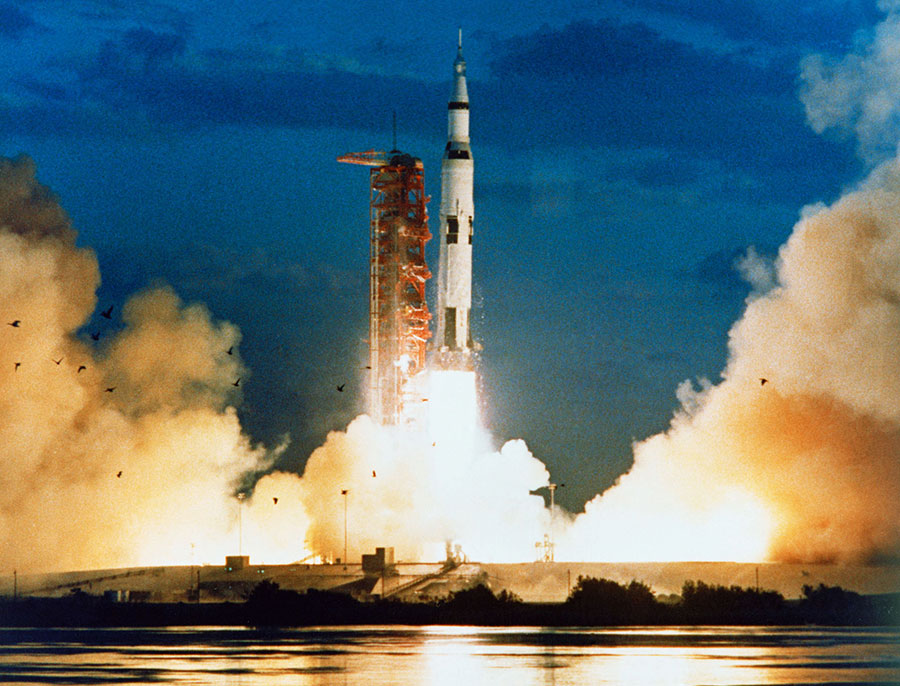
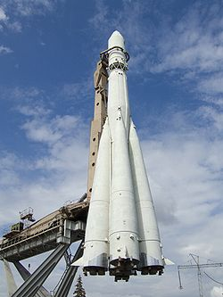
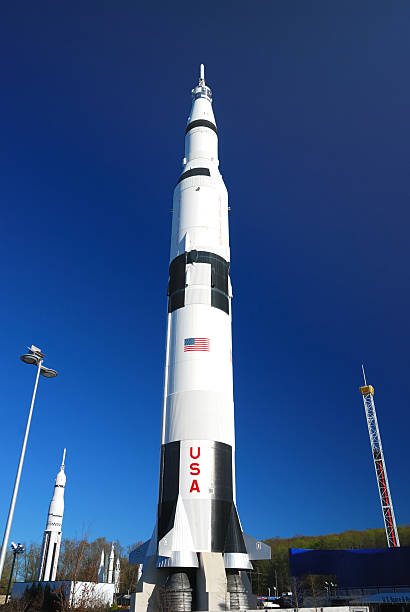
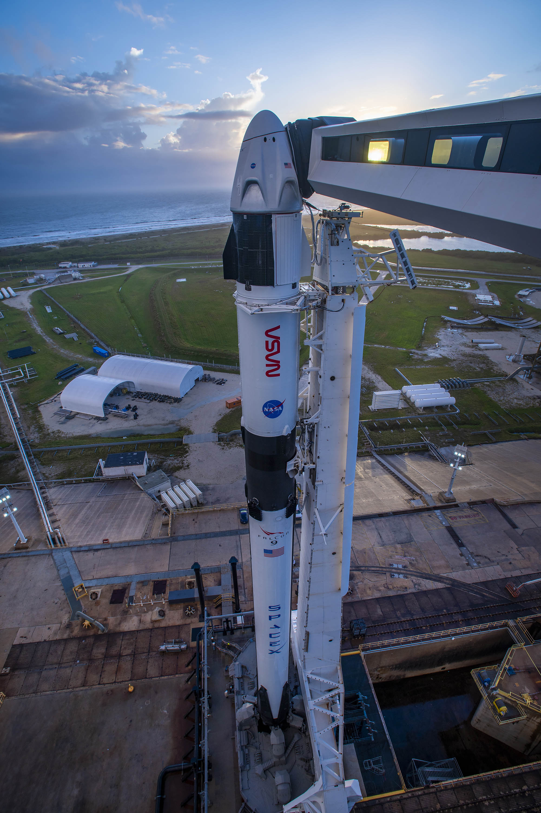
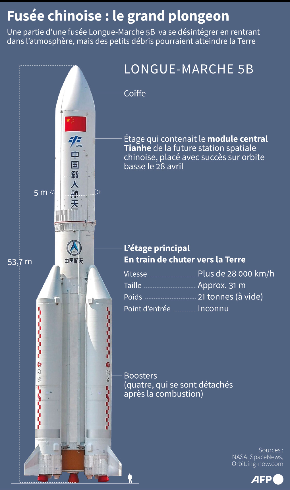

la fusée soviétique qui a placé en orbite Spoutnik, 83 kg, le tout premier satellite de l'histoire.

La Saturn V est l'une des fusées les plus célèbres de l'histoire. Elle a été utilisée pour envoyer les astronautes des missions Apollo vers la Lune.

Aujourd'hui, des fusées modernes comme la Falcon 9 peuvent être réutilisées, ce qui réduit énormément le coût des lancements spatiaux.

Une fusée fonctionne grâce au principe d'action-réaction. Les moteurs brûlent un carburant et expulsent des gaz très rapidement vers le bas. Cette force pousse la fusée vers le haut.